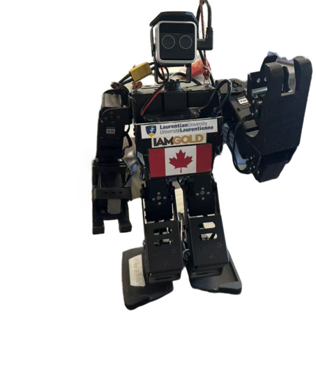

Q1Observation
Observe the robot. What is the robot's current pose?
Stand
Fall front
Fall back
Leaning forward
Leaning backward

AiNex RobotMake choices and fill in the blanks using one frozen sensor snapshot. You will receive feedback after each response. If you are unsure, select Hint for a progressively more specific tip.
Enter whole-degree values from one frozen snapshot. The graph uses Y to choose the next reasoning branch.
Ask the Robot Digital Twin in the sidebar. Its conversation does not block or advance the behavior graph.
| Y angle (pitch) | robot_state | Recovery motion |
|---|---|---|
| Y ≤ -90° |
fall_front
|
recline_to_stand.d6a
|
| -90° < Y < -20° |
leaning_forward
|
No action |
| -20° ≤ Y ≤ 20° |
stand
|
No action |
| 20° < Y < 90° |
leaning_backward
|
No action |
| Y ≥ 90° |
fall_back
|
lie_to_stand.d6a
|
The intervals are mutually exclusive and cover the complete pitch range without gaps.
After a successful recovery, the robot may be visibly standing even though Y does not return to the number recorded at the beginning. The standing pose may now read a few degrees away from the original baseline. In most cases, the robot is fine; the sensor reading has moved.
A gyroscope measures angular velocity in degrees per second, not angle. The reported orientation is obtained by integrating angular velocity over time. Small bias and noise in every sample accumulate in that running sum. This growing error is called gyroscope drift, or integration drift.
A fall can make the error larger. Rotation is fast, and impact with the ground may briefly saturate the gyroscope. Incorrect rate samples from those moments remain in the integrated angle even after the robot stands again.